Sign up
- On Welcome, tap Sign up.
- Enter name and phone number. Email is optional.
- Tick the terms and tap Sign up.
- Enter the code sent by SMS and tap Verify.
- Add a first address on the map.
- Home opens.
How the customer app, biker app and admin dashboard work, flow by flow and page by page.
31 October 2026. Screens are from the running apps with test data, so names, prices and photos are examples. Phone numbers and email addresses are masked.
Three products share one backend, so a change in one reaches the others.
| Product | Who uses it | Main job | Runs on |
|---|---|---|---|
| Customer app | Car owners | Book, pay, follow and rate a wash | iPhone, Android |
| Biker app | Bikers who wash the cars | Work each order stage by stage, see earnings and schedule | iPhone, Android |
| Admin dashboard | Kleano team | Run orders, people, prices, schedules and content | Web browser |
Both apps and the dashboard work in English and Arabic. Both apps also offer Light, Dark and Same as phone appearance.
A wash moves through these stages, and all three products show the same status.
| Stage | Customer sees | Biker does | Team can |
|---|---|---|---|
| Booked | Order confirmed, listed under Bookings | Nothing yet | See it under Orders, cancel it |
| Waiting for biker | Waiting status | Nothing yet | Assign a biker from Order Details |
| Accepted by biker | Accepted status | Sees it in Active orders, swipes On the way to client | Reassign or cancel |
| On the way | Live map with Track your wash, status on Lock Screen or in notification | Swipes Arrive to client; live location is sent | Cancel |
| Arrived | Arrived status | Adds a before-wash photo, swipes Start washing | Cancel from Order Details |
| Washing | Washing status | Adds an after-wash photo, swipes Complete Wash | Cancel from Order Details |
| Completed | Before and after photos, rating request | Rates the client | See photos and ratings |
Five tabs run along the bottom: Home, Vehicles, Bookings, Plans and Profile. A WhatsApp support button floats on every tab except Home.
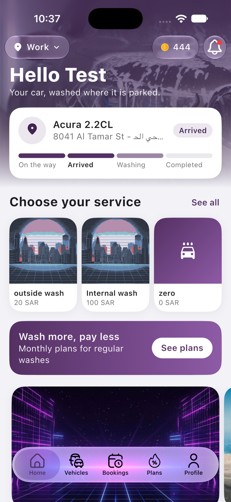
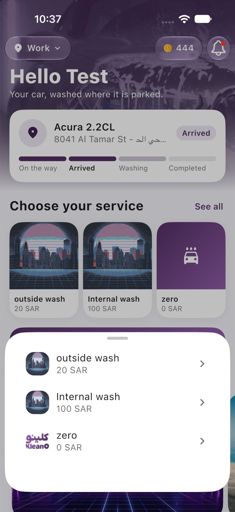
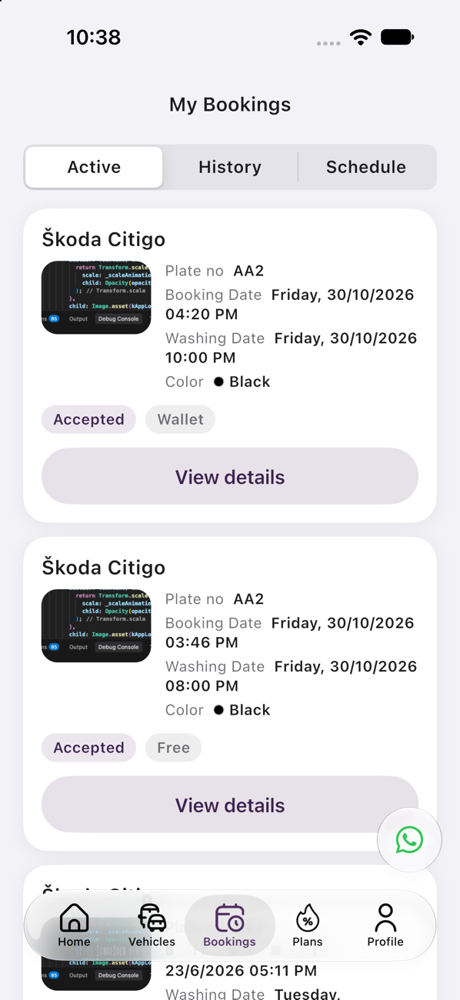
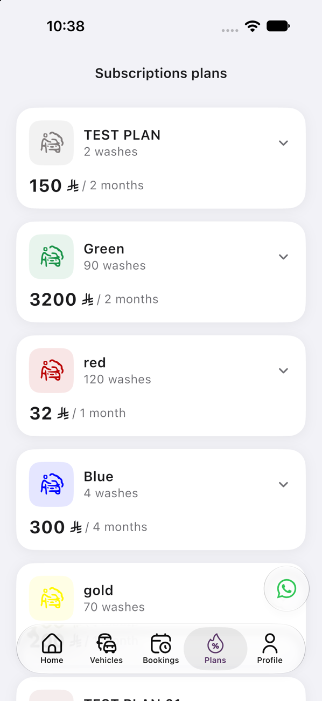
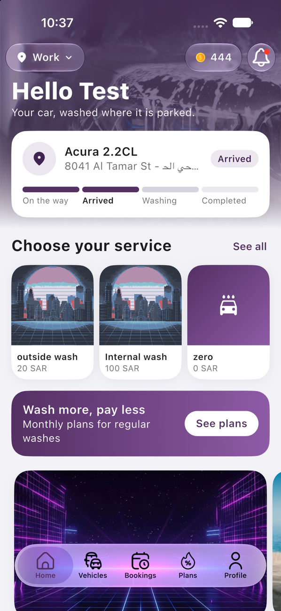
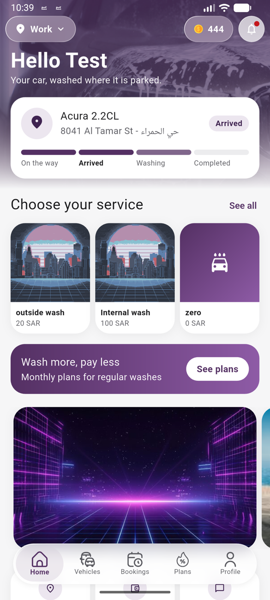
If there is nothing to pay, such as a wash covered by a plan, the order is placed straight after Confirm. Book again on Home starts from step 2 with the same service and car.
Outside the app, the status currently updates only while the app is running. Updates with the app closed need a backend change.
Customers can cancel only until a biker has accepted. After that the icon no longer appears.
Places outside the service area show a message instead of the form. Changing address returns to Home and restarts a booking in progress.
Promo codes and points apply to bookings, not plan purchases.
A customer with an active plan cannot subscribe to another until it ends. There is no cancel or renew action in the app.
Shows the logo and decides where to start.
Where it leads: Onboarding, Welcome or the address check.
Three intro slides on first launch.
On screen: Photo, title, text and progress dots.
What you can do: Change language, Skip, Next, Get started.
Where it leads: Welcome.
Lets people choose how to enter the app.
What you can do: Sign up, Log in, Continue as a guest.
Where it leads: Create account, Log in or Home.
Registers a new customer.
On screen: Name, optional email, phone with country code, terms checkbox.
What you can do: Read the terms, tap Sign up.
Where it leads: Verify code.
Signs in with a phone number.
What you can do: Choose country code, tap Log in.
Where it leads: Verify code.
Confirms the phone number by SMS.
On screen: Code boxes and a 2-minute countdown.
What you can do: Verify, or Resend code after the countdown.
Where it leads: Address check.
Checks that a signed-in customer has an address.
What you can do: Retry or add an address if loading fails.
Where it leads: Home or Add address.
Show guests what requires an account.
On screen: A sign-up message on Vehicles, Bookings and Notifications, and a shorter Profile.
What you can do: Sign up now, Subscriptions, Terms, Contact us, How points works.
Where it leads: Welcome or the chosen page.
The starting point for booking and for the current wash.
On screen: Address, points, bell and greeting; the wash in progress or a Book again card; services; plans card; offers; three service promises.
What you can do: Change address, open points or notifications, tap a service, open plans or an offer, pull down to refresh.
Where it leads: Service sheet, Plans, Notifications, Set booking location, Wash details.
Shows one service and its optional extras.
On screen: Name, duration, description, extras with prices and running total.
What you can do: Tick extras, tap Next.
Where it leads: Booking details. Guests are asked to sign up.
Replaces the service list for subscribers.
On screen: Plan name, washes remaining and plan card.
What you can do: Add extra services, or tap Next to book.
Where it leads: Booking details.
One page for everything about the wash.
On screen: Cars, dates and available times, location map, notes, add-ons, car freshener switch and total.
What you can do: Choose each item, add a car, change location, tap Confirm.
Where it leads: Order details, or Order confirmed if nothing is due.
Final review and payment.
On screen: Car, location, notes, date, services, add-ons and total.
What you can do: Apply promo code or points, choose payment, confirm.
Where it leads: Payment page or Order confirmed.
The payment provider’s page for card payments.
What you can do: Complete the card check.
Where it leads: Order confirmed, or a message with Try again.
Confirms the booking.
What you can do: Go to orders.
Where it leads: Bookings.
Lists washes in Active, History and Schedule tabs.
On screen: Car, plate, booking date, wash date, colour, status and payment type.
What you can do: View details, Track your wash, pull to refresh.
Where it leads: Wash details or Tracking.
Everything about one wash, updating live.
On screen: Request number, status, stage bar, photos, biker, map, car, dates, rating, payment summary, services and add-ons.
What you can do: Cancel when allowed, zoom photos, call or WhatsApp the biker, open the map, rate.
Where it leads: Full map, rating or cancel messages.
Live map while the biker comes to the car.
On screen: Biker and car pins, biker name and photo, stages with times.
What you can do: Call or WhatsApp the biker, drag the panel.
Where it leads: Rating when the wash completes.
Shows the stage outside the app.
On screen: Dynamic Island and Lock Screen on iPhone, progress notification on Android.
Messages from Kleano.
On screen: Icon, title, text, date and unread dot.
What you can do: Tap to open the related page, show or copy promo codes.
Where it leads: Promo codes, Tracking or Wash details.
The customer’s cars.
On screen: Photo, brand and model, plate and colour.
What you can do: Tap to edit, swipe to delete, add a car.
Where it leads: Add or edit vehicle.
Saves a car’s details.
On screen: Photo, brand, model, plate and colour swatches.
What you can do: Upload from camera or gallery, save.
Where it leads: Back to the previous page.
Monthly wash plans.
On screen: Current plan with washes remaining and expiry, then plan cards with price, washes and points.
What you can do: Expand a plan, Subscribe.
Where it leads: Confirm, payment and success.
The customer’s account hub.
On screen: Photo, name, phone, wallet balance and points.
What you can do: Open Wallet, Points, Promo codes, Account, Settings, About us; Log out.
Where it leads: The chosen page.
Personal details.
What you can do: Edit name, email, gender, date of birth and photo; delete account.
Where it leads: Edit page or Welcome after deleting.
Adds money to the wallet.
On screen: Amount in SAR and payment options.
What you can do: Pay by card or Apple Pay.
Where it leads: Success message.
Shows points and their value.
On screen: Points, SAR value and progress to the redeem limit.
What you can do: View only.
The customer’s codes in Active, Used and Expired tabs.
On screen: Discount, uses and expiry.
What you can do: Reveal codes, tap Use to keep one for the next checkout.
Chooses where the next wash happens.
On screen: Map and saved places.
What you can do: Choose a place, Manage locations, Add address.
Where it leads: Home, Saved places or Add address.
Manages addresses.
What you can do: Make one the default, delete others, add an address.
Saves a place from the map.
On screen: Map pin, street and label choice.
What you can do: Move the map, use my location, zoom, search, save.
Where it leads: Home.
App preferences.
What you can do: Language, Appearance, notifications on or off.
Company information.
On screen: Terms text, emails, phone numbers and social links.
What you can do: Open WhatsApp and social links.
Four tabs run along the bottom: Today, Orders, Earnings and Profile. Bikers cannot sign up in the app; the team creates their accounts from the dashboard.
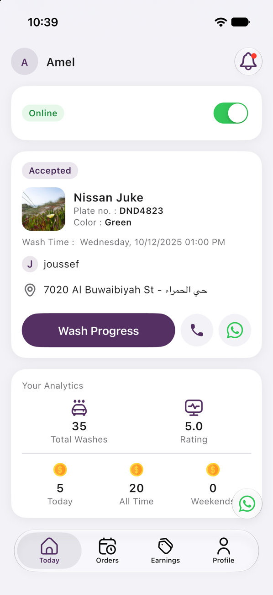
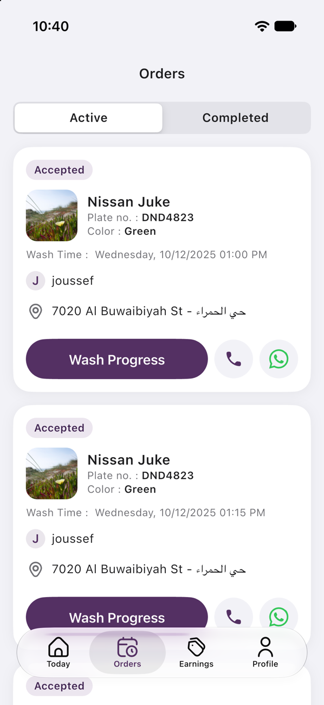
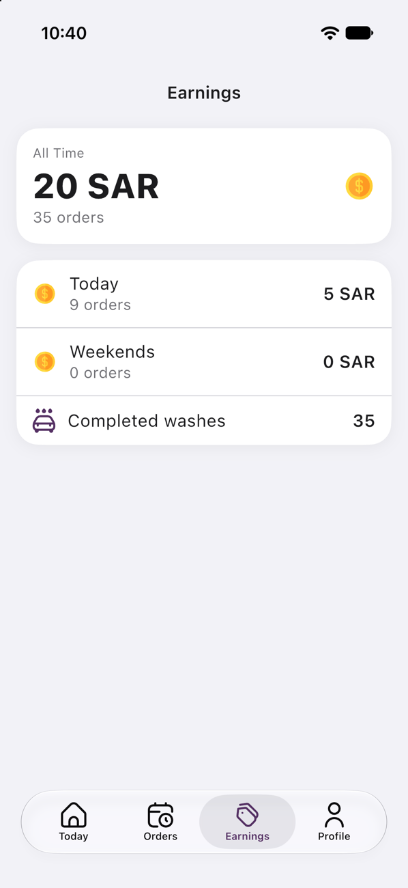
Forgot password: enter the phone number, enter the SMS code, set a new password, then log in.
Stages only move forward. Photos can come from the camera or gallery.
Schedules are set by the team from the dashboard.
Starts the app and introduces it on first launch.
On screen: Logo, then three slides.
What you can do: Next, Skip, Get Started.
Where it leads: Log in, or Today if signed in.
Signs the biker in.
On screen: Username, password and a Remember my password switch.
What you can do: Login, Forgot password.
Where it leads: Today or password reset.
Sets a new password by SMS.
On screen: Phone number, 6-digit code, new password.
What you can do: Send code, Verify, Resend after 2 minutes, save.
Where it leads: Log in.
The biker’s home base.
On screen: Photo and name, bell, status switch, current order, and analytics for washes, rating and earnings.
What you can do: Pull to refresh, open Profile or Notifications, change status, WhatsApp support, act on the order.
Where it leads: Profile, Notifications, order pages.
Current and finished orders.
On screen: Active and Completed lists when online.
What you can do: Switch list, pull to refresh, scroll for more.
Where it leads: Wash Details or the order map.
The working screen for one order.
On screen: Biker and customer pins, car, customer, contact icons, street and four-stage bar.
What you can do: Swipe to the next stage, contact the customer, open Google Maps, close.
Where it leads: Photo sheet, rating.
Full order information.
On screen: Request ID, customer, street, car, washing date, notes, services and add-ons.
What you can do: Open Google Maps, zoom the car photo, expand a service.
What the biker has earned.
On screen: All Time, Today and Weekends with order counts, and completed washes.
What you can do: View only.
Identity, stats and account links.
On screen: Photo, name, phone, status, analytics and date joined.
What you can do: My Schedule, Personal Information, Settings, Log out.
Where it leads: The chosen page.
Account details.
On screen: Photo, username, password and phone.
What you can do: Change name and photo, change password.
Assigned shifts.
On screen: Cards from Saturday to Friday with time, city and area.
What you can do: View only.
App preferences.
What you can do: Language and Appearance.
Messages for the biker.
On screen: Title, text, time and unread dot.
What you can do: Pull to refresh, tap an order message to open it.
Where it leads: The order map or Completed orders.
The side menu groups every page. The top bar shows where you are, the language switch and your account menu.
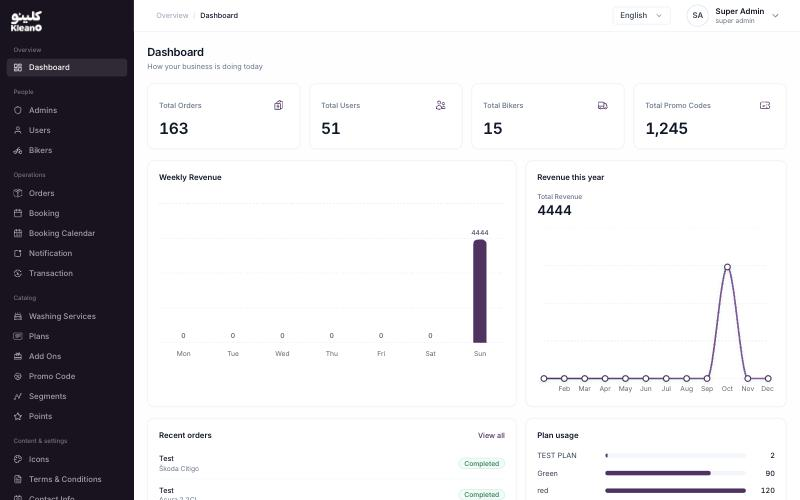
Signs an admin in.
On screen: User name and password.
Where it leads: Dashboard.
A snapshot of the business.
On screen: Totals for orders, users, bikers and promo codes; weekly and yearly revenue; recent orders; plan usage.
What you can do: Click a card or recent order.
Where it leads: The matching list or Order Details.
Manages dashboard staff.
On screen: Name, phone, created date, status; All, Active and Suspend tabs; search.
What you can do: Add New Admin with name, password, phone, national ID and cities.
Where it leads: Admin Details.
One staff account.
On screen: Details, status and cities.
What you can do: Edit, suspend or restore, delete. Super admins can reset passwords.
Finds and manages customers.
On screen: User ID, name, email, phone; status filter, search and pages.
What you can do: Export to Excel, Top Up.
Where it leads: User Details.
One customer’s full picture.
On screen: Wallet, plans, vehicles, order statistics and order history with filters.
What you can do: Suspend or unsuspend.
Where it leads: Order Details.
Manages bikers and pay terms.
On screen: Name, phone, national ID, deliveries, time worked, commission and status; search and date filter.
What you can do: Export, Add New Biker; view, edit, suspend or open schedule.
Where it leads: Biker Details or Schedule.
One biker’s account and commission.
On screen: Photo, details, commission settings and totals.
What you can do: Edit, change password, suspend or activate.
Sets where and when a biker works.
On screen: Day tabs, weekend days, cities, areas, priorities and 15-minute time slots.
What you can do: Copy To, Save, Delete Schedule.
Where it leads: Bikers.
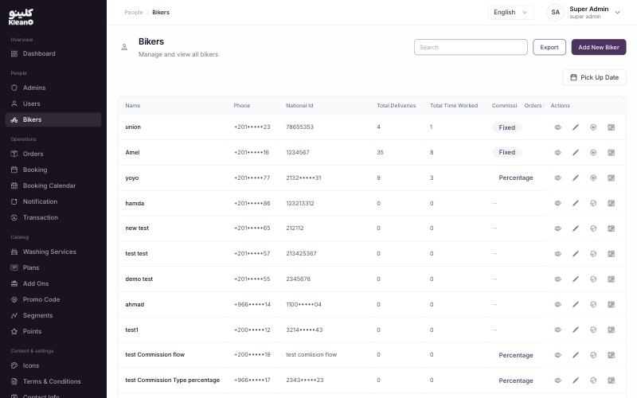
Tracks every order by stage.
On screen: Waiting for biker, Live (with four stages), Completed and Cancelled tabs; search and pages.
What you can do: Export, show on map, Cancel where allowed.
Where it leads: Order Details.
Everything about one order.
On screen: Customer, biker, vehicle, location, pricing, plan, photos, services and add-ons.
What you can do: Cancel, assign a biker, open Google Maps, open the customer or biker.
Shows who is scheduled at each hour.
On screen: Day, city, area and date filters with a 24-hour timeline.
What you can do: Click a biker card.
Where it leads: Biker Schedule.
Opens booking days and times.
On screen: Date range and calendar with month, week, day and list views.
What you can do: Create Sprint, edit a day’s time slots, turn a day on or off.
The team’s alert feed.
On screen: Title, message and time, grouped Today, Yesterday and Older.
What you can do: Click to mark read.
Where it leads: Order Details.
Payment record for each order.
On screen: Name, phone, biker, discount, paid, refund, date, payment status and status.
What you can do: View only.
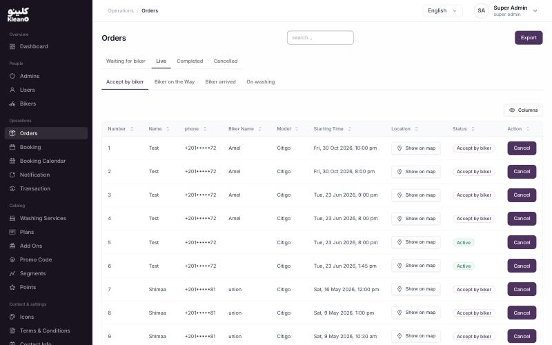
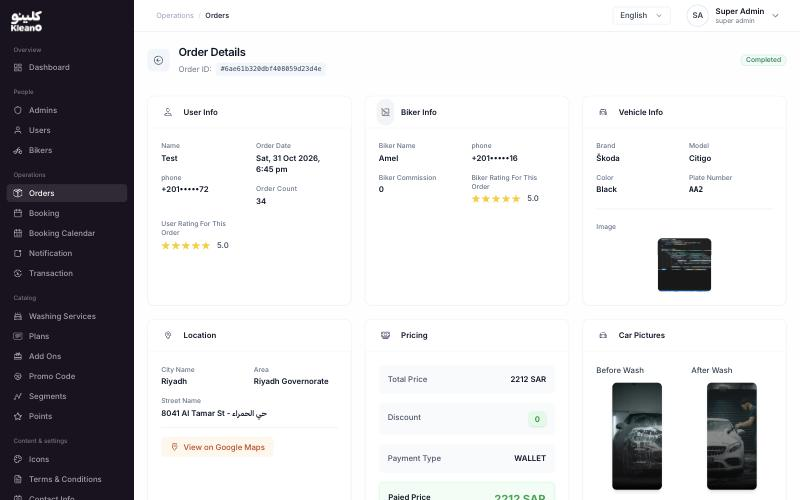
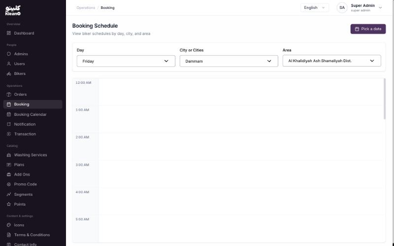
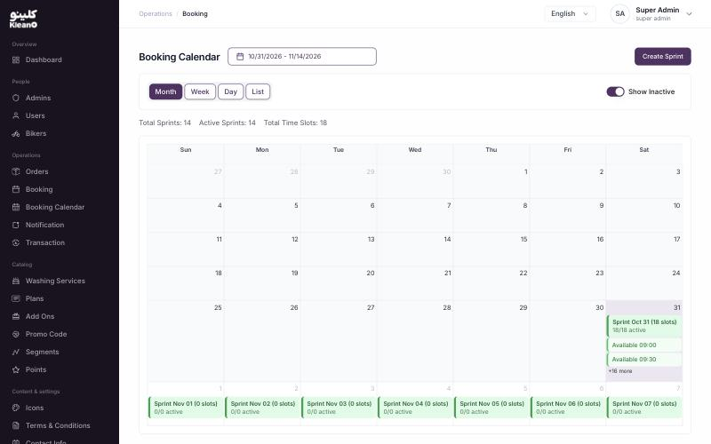
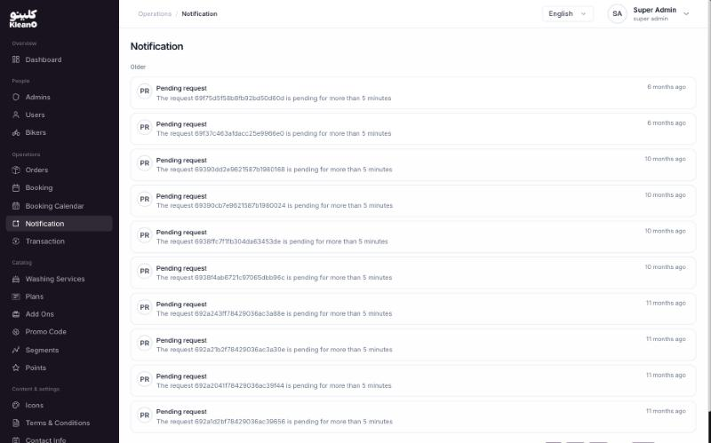
The catalogue of wash types.
On screen: Name and icon, duration, price, type and created date.
What you can do: Add with names in both languages, duration, price, icon, type, cities and descriptions.
Where it leads: Service details.
One service.
On screen: Icon, name, duration, price, description and cities.
What you can do: Edit, manage cities.
Subscription packages.
On screen: Type and colour, duration, price, usage count and created date.
What you can do: Add with name, description, colour, icon, price, duration, services and cities.
Where it leads: Plan details.
One plan.
On screen: Details, included services, description and cities.
What you can do: Edit, manage cities.
Optional extras.
On screen: Name and icon, price, stock and created date.
What you can do: Add with name, price, icon, stock and cities.
Where it leads: Add-on details.
One add-on.
On screen: Icon, name, price, stock and cities.
What you can do: Edit, manage cities.
Creates and controls discount codes.
On screen: Type tabs, list or chart view, and date, city and status filters.
What you can do: Add a code, activate or disable it.
Named customer groups for targeted codes.
On screen: Name, created date and number of users.
What you can do: Add a segment, view its users.
Where it leads: Segment details.
One group.
On screen: Name, date and user table.
What you can do: Edit.
Loyalty point rules.
On screen: Total Pay Percentage, Exchange Percentage and Redeem Limit.
What you can do: Apply Edit.
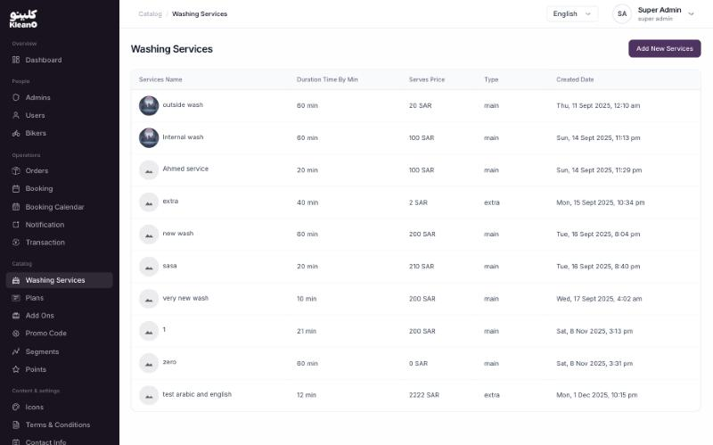
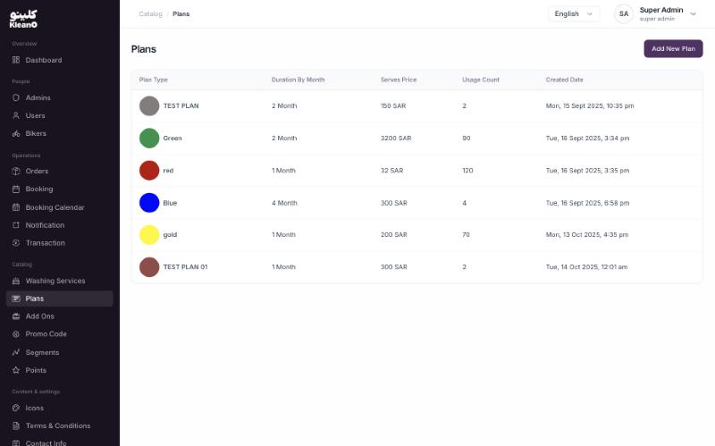
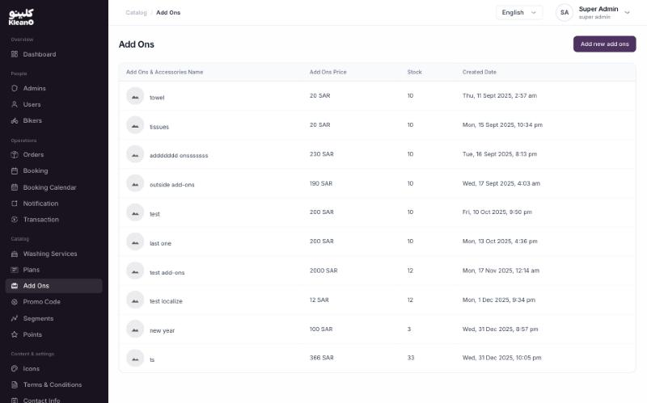
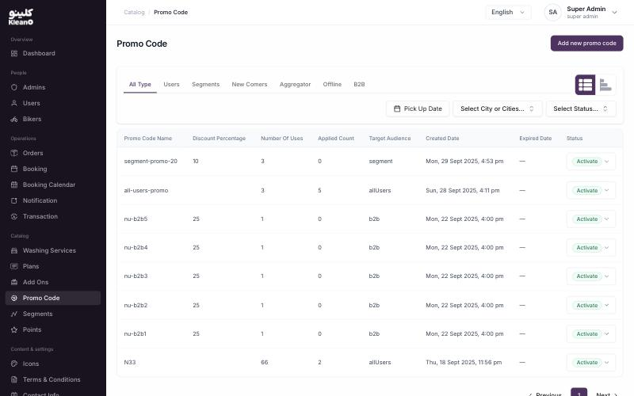
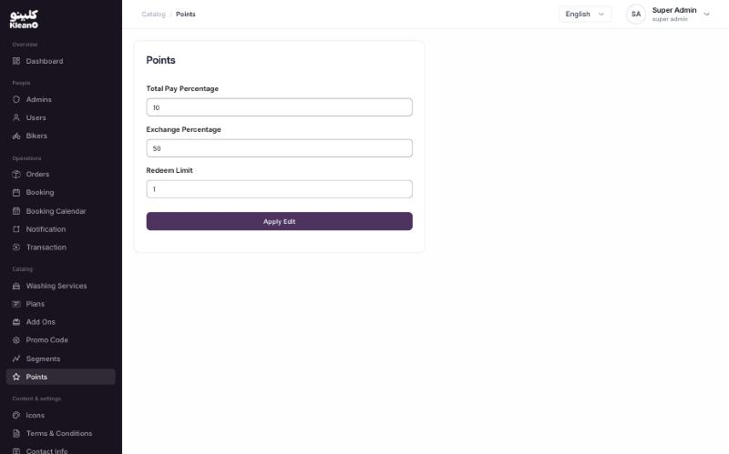
Offers shown on customer Home.
On screen: Title, description, link, images in both languages, resource and status.
What you can do: Add, edit, switch Active or Inactive.
Icon library for services, plans and add-ons.
On screen: Title and image.
What you can do: Upload, delete.
The terms customers read.
On screen: English and Arabic text.
What you can do: Edit, Save, Cancel.
Company contact details shown in the apps.
On screen: Title, WhatsApp, emails, phones and social links.
What you can do: Save, cancel, delete.
The signed-in admin’s account.
On screen: User name, language, status, role, cities and dates.
What you can do: Reset password.
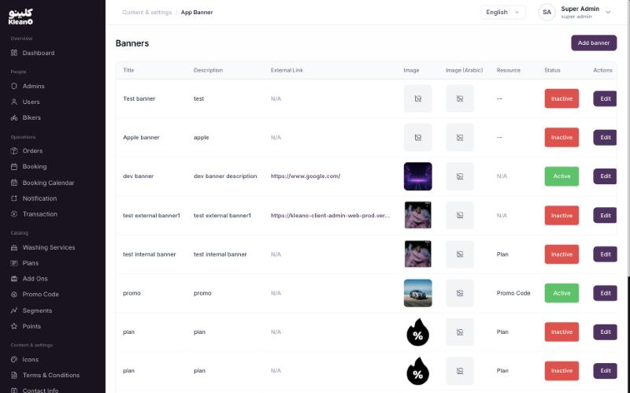